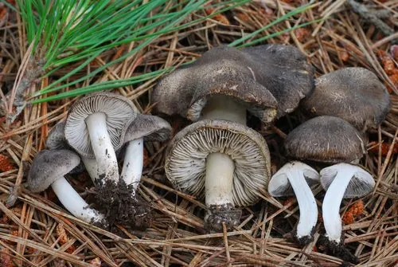

真菌 · 真菌界
蒙古口蘑 Tricholoma mongolicum

口蘑科著名食用菌，菌盖白色半球形、菌肉厚实，在草原上形成蘑菇圈，是“口蘑”之名的核心来源之一。
- 分类
- 门担子菌门纲伞菌纲目伞菌目科口蘑科属口蘑属
- 栖息环境
- 羊草草原、草甸与林缘草地，雨后形成蘑菇圈
- 地理分布
- 中国内蒙古、河北北部草原及蒙古国、俄罗斯西伯利亚有分布
- 保护级别
- 暂无评估；草原退化与过度采挖使野生产量下降
物种志
蒙古口蘑的子实体中等至大型，菌盖直径 5–12 厘米，初期半球形，后平展，白色至乳白色，表面光滑，边缘内卷。菌肉白色厚实，味清香。菌褶白色、密集，弯生。菌柄粗壮，长 4–8 厘米，直径 1.5–3 厘米，白色，基部稍膨大。孢子印白色，孢子椭圆形，光滑。
蒙古口蘑是草原上的腐生菌，生于羊草草原与草甸，常在雨后形成直径数米的“蘑菇圈”，发生期 7–9 月，喜凉爽、昼夜温差大的环境。它是“口蘑”商品名的主要来源，菌肉厚、香气浓，可炒、炖、做汤，晒干后风味更佳。目前主要靠野生采集，人工驯化尚未大规模成功；采挖时用小刀割取、保留菌丝与菌塘，是可持续利用的关键。
形态与习性
- 菌盖直径 5–12 厘米，白色半球形，边缘内卷
- 菌柄粗壮白色，长 4–8 厘米，基部稍膨大
- 孢子印白色，孢子椭圆形光滑
- 生境羊草草原与草甸，7–9 月雨后成圈发生
- 食用性菌肉厚实、香气浓，炒炖做汤皆宜
- 生态草原腐生菌，可形成直径数米的蘑菇圈
趣味知识
- “口蘑”原本指张家口集散的草原蘑菇，蒙古口蘑是其中最正宗的一种。
- 它会在草原上长成一个个圆圈，牧民称为“蘑菇圈”，圈内草色往往更浓绿。
- 蒙古口蘑菌肉极厚，切片干制后香气更浓，是炖羊肉的绝配。
- 目前仍以野生采集为主，人工栽培尚未规模化，草原退化直接影响产量。